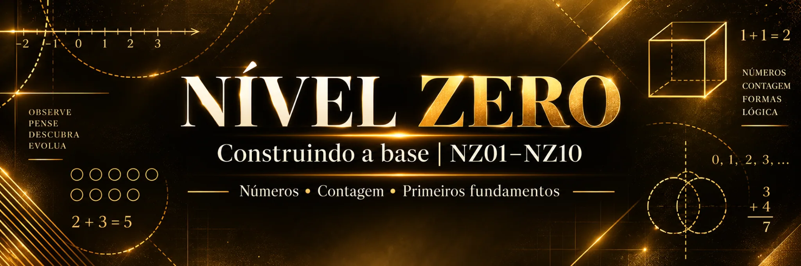
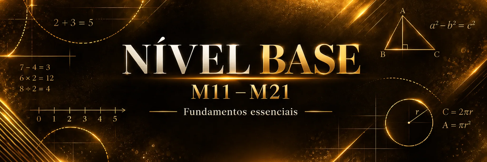
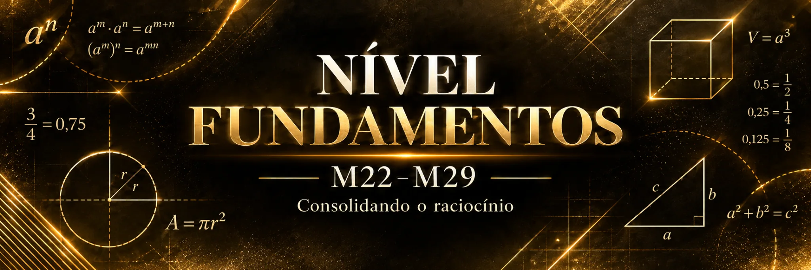
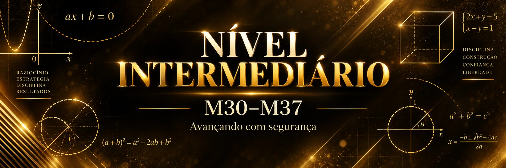
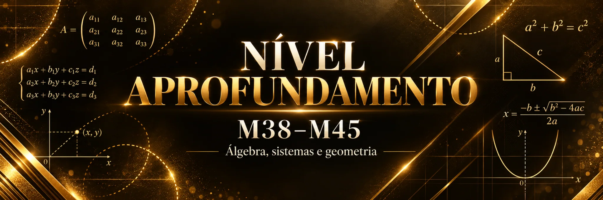
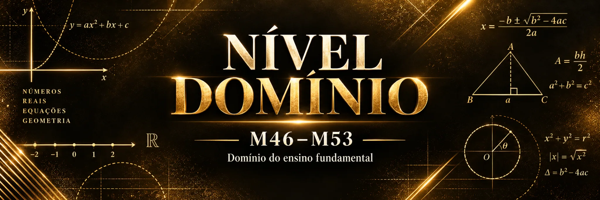
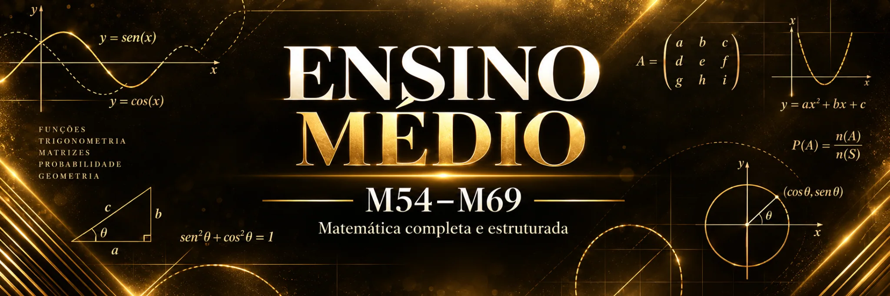

Sou professor(a)
Identifique a primeira lacuna dos seus alunos e use o módulo indicado para planejar atividades e intervenções individualizadas.
Você não é ruim em matemática. Talvez você só tenha lacunas.
Identifique onde começar, reconstrua as habilidades necessárias e acompanhe a evolução da aprendizagem.
Raio-X gratuito para conhecer seu ponto de partida • Acesso ao programa completo mediante matrícula paga.
Três realidades diferentes. Uma metodologia direcionada à primeira lacuna de aprendizagem.
Identifique a primeira lacuna dos seus alunos e use o módulo indicado para planejar atividades e intervenções individualizadas.
Reconstrua as habilidades necessárias no seu ritmo, sem repetir conteúdos que você já domina.
Fortaleça sua base matemática e acompanhe o domínio das habilidades importantes para continuar sua preparação.
O percurso não depende apenas de terminar atividades. É necessário demonstrar que a habilidade foi aprendida.
Identificar a primeira lacuna no Raio-X.
Estudar e praticar com o módulo correspondente.
Verificar domínio com Microteste A e Reteste B, se necessário.
Retomar o diagnóstico após comprovar domínio.
As capas abaixo são materiais originais enviados pela Mentes Brilhantes.







Você não precisa estudar todos os 69 módulos em sequência. O Raio-X identifica qual habilidade deve ser trabalhada primeiro; o percurso avança conforme a comprovação de domínio.
A estrutura considera habilidades da BNCC e descritores de aprendizagem matemática, conectando identificação da dificuldade e intervenção orientada.
Referência para a organização das habilidades matemáticas ao longo da escolarização.
Referência para reconhecer e trabalhar habilidades avaliadas.
Tenha acesso ao programa completo com os 69 módulos, materiais direcionados e acompanhamento. Se ainda deseja descobrir seu ponto de partida, comece pelo Raio-X gratuito.
Acesso ao programa é pago. Os valores e as condições são apresentados no checkout seguro da Kiwify.
A Ficha Individual Oficial permite acompanhar o código identificado pelo Raio-X, os módulos estudados, as revisões e os resultados de Microtestes e Retestes.
As imagens de telas de progresso são ilustrativas; o registro documentado do programa é realizado pela Ficha Individual Oficial.
O Matemática Sem Lacunas nasceu da observação de dificuldades persistentes na aprendizagem matemática. Seu propósito é localizar a primeira lacuna, orientar a reconstrução e comprovar o domínio antes do avanço.
Uma abordagem para professores que precisam planejar intervenções e para estudantes que querem voltar a aprender com direção.
Não. O Raio-X indica o módulo correspondente à primeira lacuna identificada.
Sim. O Raio-X é gratuito. Os materiais completos e o acompanhamento fazem parte do programa pago.
A primeira lacuna pode aparecer em cerca de cinco minutos, mas a duração varia conforme as respostas e o percurso.
Com os resultados dos Microtestes e Retestes e os registros na Ficha Individual Oficial.
Os materiais impressos podem ser usados com os próprios alunos, respeitando as condições do programa. Os arquivos digitais não podem ser revendidos ou redistribuídos.
Ajuda a reconstruir habilidades matemáticas, mas não substitui uma preparação específica para o edital.
Seja para ensinar matemática, voltar a estudar ou fortalecer a preparação para concursos, o Raio-X gratuito ajuda a identificar sua primeira lacuna.
Raio-X: acesso gratuito ao diagnóstico. Programa completo: matrícula paga pelo checkout da Kiwify.